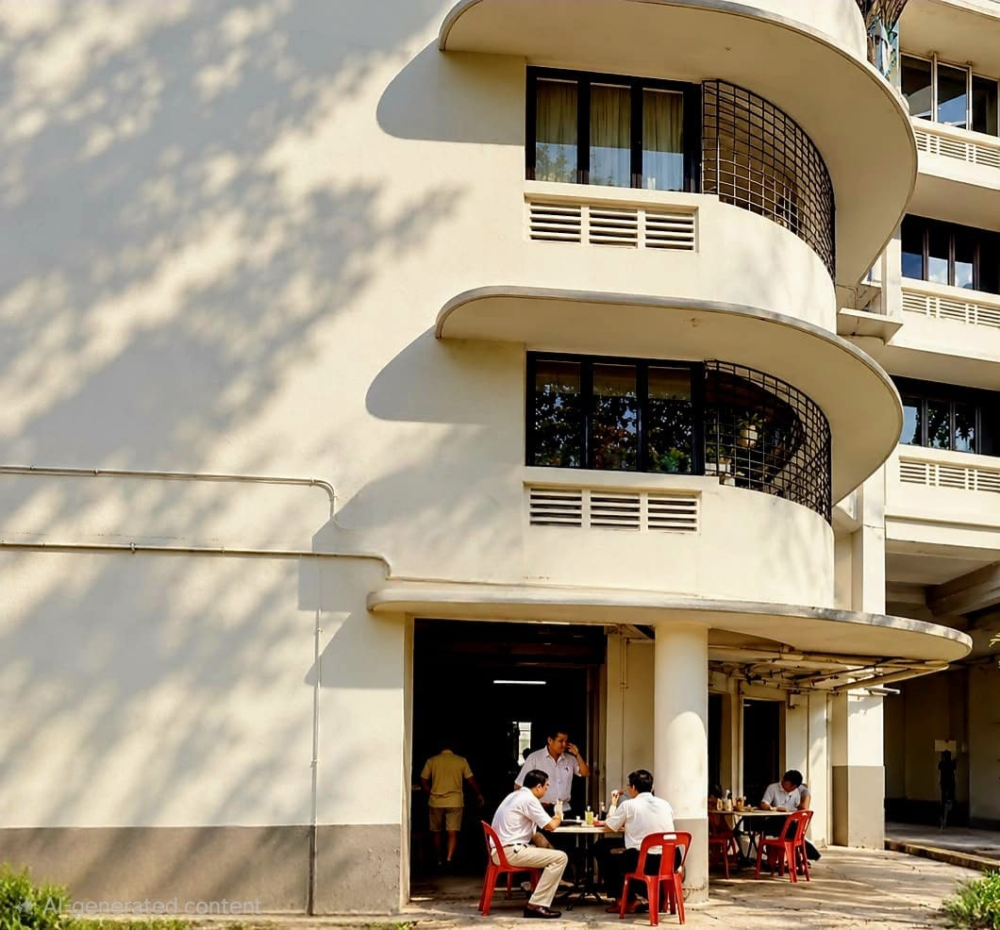
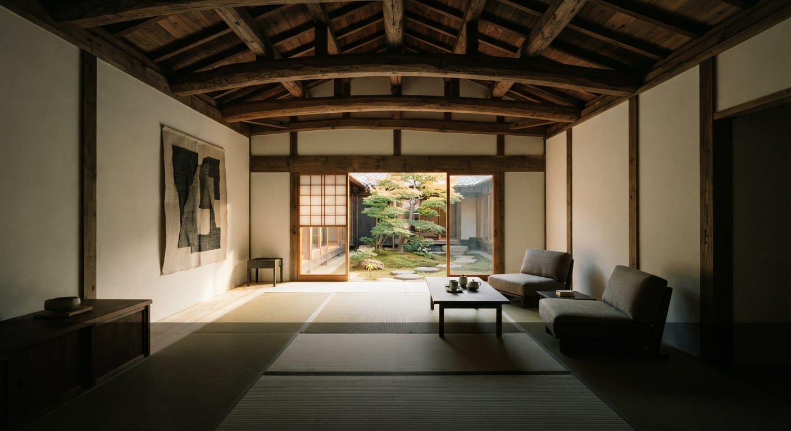
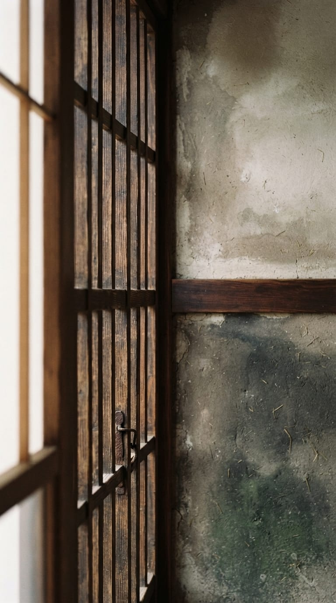

보존과 적응적 재사용
헤리티지 건물, 전통 건축, 활용되지 못하는 건물에 그 고유한 성격을 존중하면서 알맞은 현대적 쓰임을 찾습니다.

부동산과 호스피탈리티, 그리고 장소가 만나는 곳에서 일합니다.
건물은 복원되고도 미래를 얻지 못할 수 있습니다.
Conservation Dwelling은 성공적인 보존에는 건축을 지키는 것 이상이 필요하다고 믿습니다. 그 장소가 계속 쓰여야 할 분명한 이유가 있어야 합니다.
우리는 소유주, 파트너와 함께 그 목적을 찾고, 헤리티지 건물과 전통 건축, 활용되지 못하는 부동산을 숙박, 호스피탈리티, 문화, 식음료 등 체험 중심의 공간으로 리포지셔닝합니다.
초기 물건 평가부터 콘셉트 개발, 운영 전략, 그리고 지속적인 호스피탈리티 운영까지. 물리적 자산과 그것을 오래 지속시키는 사업을 연결합니다.
헤리티지 건물, 전통 건축, 활용되지 못하는 건물에 그 고유한 성격을 존중하면서 알맞은 현대적 쓰임을 찾습니다.
물건, 입지, 고객, 사업 기회를 중심으로 부티크 숙박·호스피탈리티 콘셉트를 만듭니다.
예약과 레비뉴 관리부터 게스트 경험, 유통, 성과 관리까지. 호스피탈리티 자산을 움직이는 운영 시스템을 구축하고 관리합니다.
기존 자산과 저성과 자산을 다시 검토해 더 강한 상업적 쓰임과 제안을 찾아냅니다.
건물을 동네, 건축, 음식, 공예, 문화, 지역 공동체와 연결해 장소에 뿌리내린 경험을 만듭니다.
사업 타당성과 콘셉트 개발부터 운영사 전략과 실행까지, 소유주, 개발사, 건축가, 전문 파트너와 함께합니다.
Conservation Dwelling은 2012년 싱가포르에서 설립되었습니다. 현재 우리의 사업과 활동은 싱가포르, 일본, 한국으로 이어지고 있습니다.
본사이자 경영의 거점입니다.
보존 중심의 호스피탈리티, 적응적 재사용, 지역의 사업 기회.
호스피탈리티와 지역 사업 개발.

일본 곳곳에서 전통 건물이 사라지고 있습니다. 문화적 가치가 없어서라기보다, 지속 가능한 현대적 쓰임을 찾지 못했기 때문인 경우가 많습니다.
우리는 보존과 호스피탈리티를 연결하는 데서 기회를 봅니다. 마치야, 고민가, 빈집(아키야), 소규모 숙소 등 개성 있는 건물을 대상으로, 그 건축과 동네, 문화적 맥락에 뿌리내린 사업성 있는 쓰임을 개발합니다.
우리의 역할은 물건 평가와 콘셉트 기획에서 호스피탈리티 전략, 운영 모델, 게스트 경험, 운영 관리까지 이어질 수 있습니다.

모든 오래된 건물이 호텔이 되어야 한다고 생각하지 않습니다.
다만 의미 있는 건물이라면, 무엇이 될 수 있는지 신중하게 살펴볼 가치가 있다고 믿습니다.
답이 숙박일 때도 있고, 음식, 문화, 공동체, 일터, 혹은 그 조합일 때도 있습니다.
그 장소가 무엇이었는지, 시장이 무엇을 필요로 하는지, 그리고 그 건물이 지속 가능하게 무엇이 될 수 있는지. 그 교차점을 찾는 것이 우리의 역할입니다.
회사 소개개성 있는 건물과 장소에 상업적으로 지속 가능한 새로운 쓰임을 찾는 부동산 소유주, 개발사, 호스피탈리티 그룹, 지자체, 파트너와 함께 일합니다.